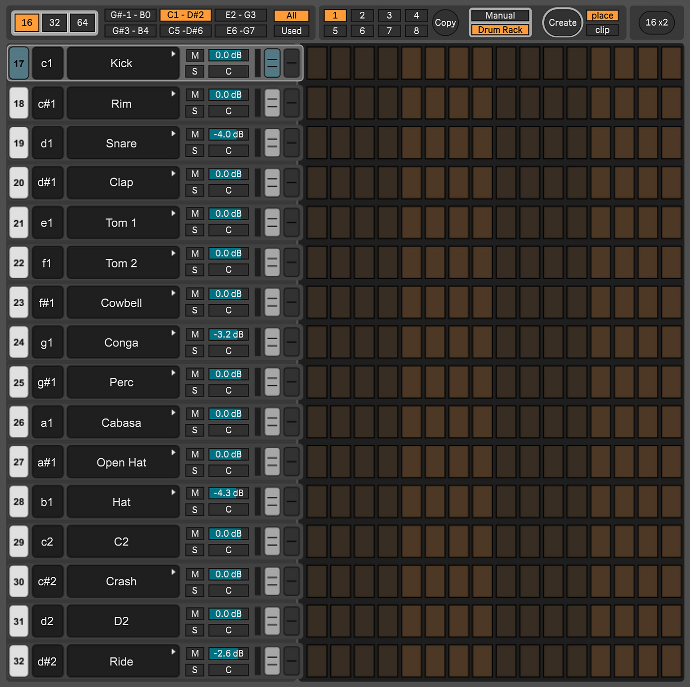

FSEQ
Max for Live DeviceNext-Level Drum Sequencing. A powerful, fully integrated step sequencer for Ableton Live, optimized for Drum Racks.
 GET ON GUMROAD
GET ON GUMROAD
* A purchase also covers all future updates!
FEATURES AT A GLANCE
Scalable Grid
Program detailed grooves with up to 64 steps per pattern.
Create Clip
Turn your sequences into finished MIDI clips with one click, exported directly to Session View.
Fast Copy & Cut
Duplicate or move complex rhythms between tracks in seconds.
8 Patterns & Total Recall
Create variations across 8 slots, automatically saved within your project.
Deep Drum Rack Integration
Bi-directional synchronization of names, volume, panning, mute, and solo with Drum Pads.
Preview & Chain Focus
Audition sounds and automatically focus the corresponding Drum Pad chain in Live.
Bypass & Auto Mute
Mute individual rows or let the sequencer pause automatically when MIDI clips are playing.
Chain Selector Support
Cycle through samples instantly with automatic Instrument Rack detection.
Smart Views
Toggle between "All" instruments and a clutter-free "Used" view.
Advanced Editing
Paint notes and velocity curves or use context menus for fast fills.
POWERFUL WORKFLOW
quick overview

Drum Sequencer
Create custom drum loops effortlessly. FSEQ offers an intuitive step sequencer interface that makes programming, visualizing, and building your beats fast, fun, and highly visual.
Select
Edit with surgical precision. Use the select tool to highlight multiple steps or rows, then apply familiar keyboard shortcuts to instantly cut, copy, paste, or duplicate your patterns. You can even use it to apply a random fill to your selection, making complex edits and variations fast and intuitive.
Velocity
Add dynamic expression to your patterns. Paint velocity curves or fine-tune individual steps to bring your drum grooves to life with human-like feel.
Hotkeys
Speed up your workflow with intuitive keyboard shortcuts. Auto-filling, cutting, copying, and pasting entire rows, alongside powerful mouse scroll-wheel functions for quick adjustments.
API Integration
Experience deep integration with Ableton Live. The bi-directional API communication ensures that your sequencer and Drum Rack are always perfectly in sync, including automatic selection of Drum Rack pads and chains.
Sample Swap
Audition and swap samples instantly. By directly controlling the chain selector within an Instrument Rack, this tool enables lightning-fast sound replacement. Iterate quickly through your library and effortlessly build complex, custom drumsets.
Preset Management
Seamlessly save and recall your favorite patterns. Presets are stored as JSON files in a custom folder of your choice,. The integrated preset browser lets you manage your library without leaving the creative workflow. Easily share your custom presets with others and discover new ones to get inspired.
Create
Turn sequences into MIDI clips with a single click. Export patterns directly to Live's Arrangement View and assign custom hotkeys to generate clips on the fly. even when the FSEQ interface is closed.
Manual Mode
Take full control of your sequence names and MIDI notes. Manual mode allows you to bypass Drum Rack integration for custom mappings and unique hardware setups. You can even save your custom configurations as presets, so they are instantly ready to use with your favorite instruments.
Ableton Themes
FSEQ changes with the Ableton color theme. This ensures that the interface always fits perfectly into your workspace, regardless of whether you prefer a dark or light theme.
Specifications
System Requirements
Software
Ableton Live Suite (Max for Live is required). Ableton Live 12.4 is required to use all features.
Memory & Performance
While FSEQ has a very low CPU footprint, loading hundreds of samples into large Drum Racks is heavily RAM-intensive, making 16GB the minimum requirement and 32GB highly recommended.